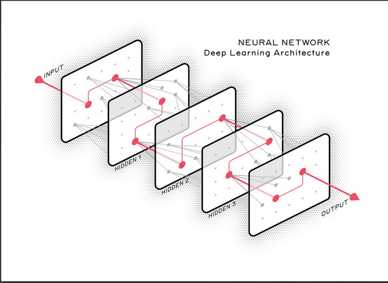
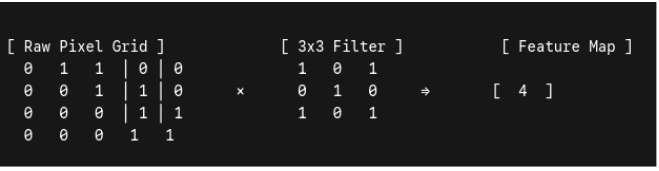
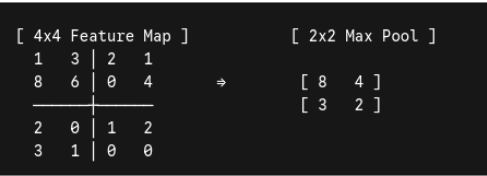
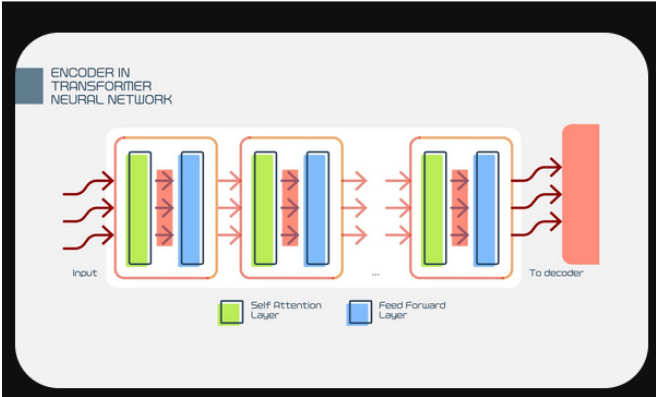
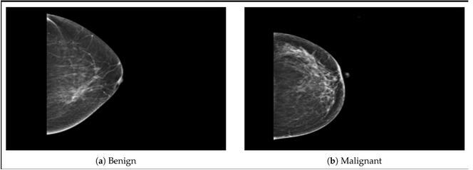
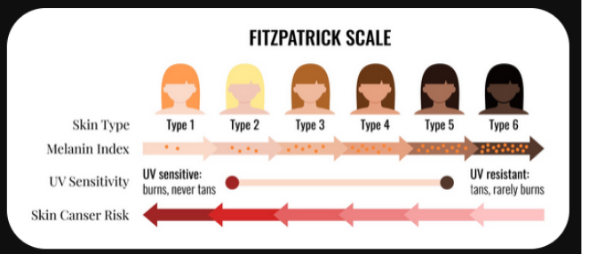

All in One View
Content from Introductions
Last updated on 2026-05-26 | Edit this page
Estimated time: 30 minutes
Overview
Questions
- “What ML/AI tools are you already aware of in healthcare, and what is your immediate gut reaction to them—optimism, skepticism, or anxiety?”
- “Where do you think AI can make the biggest impact in your day-to-day workflow: reducing paperwork or assisting in patient diagnosis?”
Objectives
- Establish a shared baseline of understanding regarding the current hype versus the reality of AI in healthcare.
- Uncover the audience’s existing biases, fears, or enthusiasm about machine learning.
- Set expectations that this workshop is about bridging the gap between data science and clinical utility.
Part 1: Welcome & Roadmap (5 Minutes) Speaker Script
SH
"Welcome, everyone, to today’s workshop. Whether your background is in medicine, data science, administration, or research, you are in the right room.
I want to set a core expectation right out of the gate: this is a bilingual space. If you are a clinician, you speak the language of patient care, workflows, and clinical utility. If you are a data scientist, you speak the language of math, matrices, and optimization.
The magic—and the massive frustration—of AI in healthcare happens right in the middle. Our goal today isn't to make clinicians write code, nor is it to turn data scientists into medical doctors. Our goal is to learn how to translate a complex medical reality into a structured data problem, and then translate that model’s output back into something safe and useful at the patient's bedside."Key Visuals/Slides to Show
SH
A slide showing a "Bridge" connecting a Stethoscope (Clinical Practice) to a Matrix of 1s and 0s (Data Science).
A clear, high-level map of the 4 sessions so attendees know exactly where they are headed.Part 2: The “Why Now?” Hook (10 Minutes)
Use this section to ground the workshop in reality. AI isn’t exploding today because the math is brand new; most of the underlying math has existed for decades. It is exploding because three critical forces have finally collided. The Three Drivers of the Healthcare AI Explosion
SH
1. Total Digitization of Health Data:
The Talking Point: Twenty years ago, patient data was trapped in paper charts, physical film folders, and fax machines. Today, Electronic Health Records (EHRs) have digitised patient history. We finally have digital repositories of vitals, lab results, and medications that algorithms can actually read.
2. The Imaging and Genomic Deluge:
The Talking Point: A single high-resolution 3D CT scan or a whole-genome sequencing file contains gigabytes of data. Human brains are spectacular at synthesis, but we physically do not have enough hours in the day to parse the sheer volume of data being generated. We built the sensors to collect the data; now we need the computational "eyes" to help us look at it.
3. Cheap, Cloud-Scale Compute Power:
The Talking Point: Training a deep learning neural network requires billions of mathematical calculations per second. The rise of specialized hardware (like GPUs) and cloud computing means a model that would have taken a university supercomputer weeks to train ten years ago can now be trained in a few hours for the cost of a few cups of coffee.
Part 3: Group Discussion Builder (15 Minutes)
This discussion shouldn’t just be an icebreaker; it is a diagnostic tool for you as the presenter to see where the room stands on the spectrum of fear vs. hype. The Prompt to Put on the Screen
SH
"What ML/AI tools are you already aware of in healthcare, and what is your immediate gut reaction to them—optimism, skepticism, or anxiety?"How to Run the Room (Tactical Instructions)
SH
The Silent Minute (1 min): Give everyone 60 seconds to write down their thoughts on a sticky note (or a digital tool like Padlet/Slido if remote). This ensures introverts have time to form their thoughts and won't get drowned out by loudest voices.
Pair & Share (5 mins): Have them turn to their immediate neighbor (or split into Zoom breakouts of 3 people) and share their examples and feelings.
The Whiteboard Harvest (9 mins): Bring the room back together. Draw a massive line down the middle of your physical or digital whiteboard. Label one side Promise and the other Peril. Ask groups to shout out what came up.- AI in healthcare isn’t a futuristic concept; it is already operating in triaging, billing, and radiology.
- The explosion of healthcare AI is driven by three factors: massive computing power, digitized health records (EHRs), and an explosion of genomic data.
- Effective healthcare AI requires collaboration—data scientists understand the math, but clinicians understand the patient.
Content from How ML/AI Works—A Foundation
Last updated on 2026-06-26 | Edit this page
Estimated time: 75 minutes
Overview
Questions
- “If Traditional ML requires humans to pick the variables and Deep Learning finds them automatically, which one do you think clinicians trust more right now, and why?”
- “If a deep learning model is 99% accurate at predicting a stroke but cannot explain why it made that choice, would you comfortably use it on a patient?”
Objectives
- Explain how computers process diverse healthcare data streams (images, notes, waves).
- Clearly contrast traditional machine learning (rules-based/checklists) with deep learning (pattern-recognition).
- Define the concept of a “black box” model and why it matters in medicine.
What a Computer Sees
Core Concept
To understand how a computer interprets medical data, we must contrast it with the perspective of a medical professional. For instance, when a radiologist analyzes an X-ray, they rely on clinical experience and anatomical knowledge to detect abnormalities or identify changes across a patient’s historical imaging. Similarly, a physician can review an Electronic Health Record (EHR) timeline to track a patient’s decline and predict potential diagnoses. In contrast, computers are entirely blind to these clinical contexts; they process data strictly as arrays of binary code. The core challenge, therefore, lies in translating these complex medical concepts into a structured format that a machine can interpret and learn from.
Medical Data Forms & Mathematical Realities
To begin, we will examine how computers interpret and process various data modalities.
Images (Spatial Grids)
When a radiologist views a chest X-ray, they interpret a continuous landscape of varying brightness. These grayscale gradients tell a physiological story: dense structures like bone block X-rays and appear bright white, air-filled lungs allow rays to pass through and appear dark, and soft tissues occupy the gray spaces in between. Humans effortlessly synthesize these shades into an understanding of anatomical structures and potential pathology.
A computer, however, possesses no intrinsic concept of “anatomy,” “brightness,” or “shadow.” To a machine, a chest X-ray is flattened into a two-dimensional grid called a pixel matrix. If it is a standard grayscale medical image, each individual pixel is assigned a numerical value—typically ranging from 0 (pure black) to 255 (pure white) in an 8-bit system, or up to 4095 in higher-resolution 12-bit medical imaging (DICOM format).
Therefore, where a human sees a lung nodule, the computer simply registers a localized cluster of higher numerical values relative to the lower numbers surrounding it. The challenge of computer vision in radiology is training algorithms to recognize these mathematical patterns and map them to clinical realities.
 .
.
Note: This image has been normalised
Text & EHR (Tokenisation & Vectors)
A significant portion of medical data consists of textual information, such as clinical notes and metadata descriptions. The challenge is that computers cannot inherently understand text. While we could theoretically encode words alphabetically (e.g., assigning a=1, b=2, so “acute” becomes \([1, 3, 21, 20, 5]\)), this approach fails in practice. Most machine learning models require input data to be of a fixed length, and this method creates variable-length vectors. Furthermore, it provides the machine with zero semantic understanding of the words.
To solve this, Natural Language Processing (NLP) uses tokenization alongside vector embeddings. Tokenization breaks the text down into smaller, manageable units (tokens), which are then converted into dense mathematical vectors. Positioned within a high-dimensional mathematical space, these vectors group similar medical concepts close together, allowing the machine to grasp the relationships between words.
 .
.
Signals (Frequencies Over Time)
Continuous bioelectrical signals, such as Electrocardiograms (ECGs) and Electroencephalograms (EEGs), originate as analog waveforms reflecting the heart’s electrical conduction or the brain’s postsynaptic potentials. To process these signals computationally, they must undergo analog-to-digital conversion (ADC). This process samples the continuous wave at uniform intervals—often thousands of times per second (measured in Hertz)—capturing rapid fluctuations in amplitude and frequency.
However, a computer possesses no innate understanding of a “waveform” or its physiological significance. To the machine, the entire biological phenomenon is reduced to a one-dimensional array of floating-point numbers representing voltage amplitudes at discrete time steps. The core challenge in biosignal machine learning is developing algorithms that can reconstruct the underlying physiological features—such as an R-peak in an ECG or an alpha wave in an EEG—solely from this raw, sequential numerical data.
 .
.
Traditional Machine Learning
Core Concept
You are likely familiar with deep learning, the driving force behind most current AI research. While powerful, it can be incredibly complex and ill-suited for certain problems, a challenge we will explore later. Before deep learning dominated the field, we relied on traditional machine learning. These foundational methods use defined mathematical rules to analyse and separate data, making them highly interpretable, transparent, and straightforward to implement. These mathematical rules usually cater to a person’s known knowledge and leverages it.
The Engineering Reality: Feature Engineering
In traditional ML, humans must do the heavy lifting of extraction. We use our clinical knowledge to define the exact metrics, called features, that the model is allowed to look at. E.g. like rules.
- Example: To predict diabetes risk, a human programmer must explicitly extract columns for Age, BMI, and HbA1c.
- The Catch: If a critical piece of data (like a sudden change in a patient’s sleep pattern) is hidden in the raw medical record but wasn’t engineered into a data column by the developers, the model has zero capacity to notice it.
Examples of Core Architecture Reference
The table below displays some example ML and how standard clinical inputs map to traditional algorithms.
 .
.
Logistic Regression
The Starting Point: The Linear Formula
Logistic regression starts out exactly like standard linear regression (the classic line of best fit). It assigns a specific weight (or importance) to each of your clinical inputs. Let’s say we want to predict the risk of a patient being readmitted to the hospital based on two features: Age and Number of Prior Admissions. The model builds an equation that looks like this:
\(Log- Odds-Value = \beta_0+ (\beta_1.Age) + ( \beta_2. Prior-admissions)\)
- \(\beta_0\) is the baseline starting point (the intercept).
- \(\beta_1\) and \(\beta_2\) are the weights the model learns during training. If prior admissions are a massive risk factor, \(\beta_2\) will be a large positive number.
The Problem
If a patient is 80 years old and has 10 prior admissions, this linear math might spit out a raw score of +45.2. If a patient is young and healthy, it might spit out -12.4. A score of 45.2 doesn’t make sense as a probability. We need a way to squash that infinite line down into a strict bracket between 0 and 1.
The Sigmoid Function
To turn that raw score into a probability, logistic regression passes the result through a mathematical curve called the Sigmoid (logistic) function. The mathematical formula for the sigmoid curve is:
\(S(z) = \frac{1}{1+ e^{-z}}\)
Where z is the raw log-odds score from our linear equation. No matter how massive, tiny, positive, or negative the score z is, plugging it into this function forces the output to bend into an S-shaped curve that never goes below 0 and never goes above 1.
- If the raw score is a huge positive number, the output squashes tightly up against 1.0 (100% probability).
- If the raw score is a huge negative number, the output drops tightly down to 0.0 (0% probability).
- If the raw score is exactly 0, the output lands perfectly at 0.5 (50% probability).
Making the Decision: The Threshold
Once the sigmoid function outputs a probability (e.g., 0.74), the model applies a classification threshold—usually set at 0.5 (50%) by default—to make a final decision:
 .
.
Clinical Nuance
In medicine, we rarely stick to the default 0.5 threshold. If we are screening for a deadly disease, we want to catch everyone. We might lower the threshold to 0.2 (20%). This makes the model highly sensitive, flagging patients even if there is only a 20% chance they are sick, ensuring we don’t miss a critical diagnosis.
Decision Trees
At its core, a Decision Tree works exactly like a flowchart. It breaks down a complex database of patients into smaller, cleaner groups by asking a series of yes-or-no questions based on the data. It is one of the most transparent algorithms in machine learning because you can follow the exact path the model took to reach its final diagnosis.
The Anatomy of a Tree
Before looking at how a tree is built, it helps to understand its structure using standard terminology:
 .
.
- Root Node: The single master question at the very top that splits the entire patient dataset into two initial groups.
- Internal / Decision Nodes: Subsequent questions that continue to branch out based on previous answers.
- Leaf Nodes: The end of the road. These nodes contain the final prediction (e.g., “High Risk of ICU Admission” or “Low Risk”). A leaf node doesn’t split any further.
How the Tree Chooses its Questions
A human clinician builds a flowchart based on guidelines (like ACLS protocols). A Decision Tree, however, builds its flowchart by calculating math metrics directly from your raw data.
The model’s goal is to create pure leaf nodes—meaning nodes where almost 100% of the patients inside share the same outcome. To do this, it scans every single variable in your dataset (Age, Blood Pressure, Troponin levels, etc.) and tries out every possible split to find the one that reduces chaos the most.
The mathematical engine driving this is usually Gini Impurity or Information Gain (Entropy).
A Conceptual Example: Predicting Heart Attacks
Imagine a dataset of 100 patients. 50 had a heart attack (+) and 50 did not (-). The dataset is currently 50/50, completely “impure.” The algorithm evaluates two potential options for its very first split (the Root Node): Option A: Split by Age (>65)
- Left branch (>65): 40 patients (30 had a heart attack, 10 did not) (Somewhat cleaner)
- Right branch (≤65): 60 patients (20 had a heart attack, 40 did not) (Somewhat cleaner)
Option B: Split by Troponin Levels (Elevated vs. Normal)
- Left branch (Elevated): 48 patients (46 had a heart attack, 2 did not) (Highly Pure!)
- Right branch (Normal): 52 patients (4 had a heart attack, 48 did not) (Highly Pure!)
The Decision Tree calculates the mathematical impurity score for both options. Because Option B creates much cleaner, more definitive groups, the algorithm chooses Troponin Levels as its root node question. It then repeats this exact calculation for the next sub-branches.
Stopping the Growth: The Danger of Overfitting
If left completely alone, a decision tree will keep asking questions until every single leaf node is 100% pure even if it means creating a specific branch for a single outlier patient (e.g., “If Age is 42, AND Troponin is normal, AND the patient has a tattoo of a dolphin, then they are at risk”). This fatal flaw is called Overfitting. The model memorises the training data perfectly but fails when applied to new patients because it mistook random noise for a real clinical trend.
How We Fix It
To keep a tree accurate and generalizable, data scientists use two primary techniques: - Pre-Pruning (Setting Max Depth): Limiting how tall the tree can grow. For example, telling the algorithm: “You are only allowed to ask a maximum of 4 nested questions.” - Post-Pruning: Letting the tree grow completely wild, and then cutting away branches that provide very little statistical value.
Random Forest
If an individual Decision Tree is like asking a single doctor for an opinion, a Random Forest is like gathering a panel of 500 diverse specialists, letting them look at different parts of the patient’s record, and taking a majority vote. It is designed specifically to fix the biggest flaw of individual decision trees: their extreme instability and tendency to memorise noise (overfit). Here is the exact mechanics of how a Random Forest builds its democratic system.
The Core Strategy: Ensemble Learning Random Forest is an ensemble method—meaning it combines multiple weak or unstable models into one highly accurate, stable framework. It achieves this using a dual strategy called Bagging and Feature Randomness. If you simply built 500 trees on the exact same dataset, they would all choose the exact same questions and give you identical answers. To create a true “forest,” every single tree must be intentionally forced to see the world a little differently.
 .
.
Step 1: Bootstrapping (Row Randomness)
Imagine you have a master clinical trial dataset of 1,000 patients. Before building Tree #1, the algorithm takes a random sample of 1,000 patients with replacement (meaning the same patient can be picked more than once, and some patients won’t be picked at all). - Tree 1 gets an altered variation of the dataset. - Tree 2 gets a completely different random shuffle. This data-shuffling technique is called Bootstrapping. It ensures that no single outlier patient can skew the entire forest, because that outlier will only appear in a fraction of the trees.
Step 2: Random Subsets of Features (Column Randomness)
This is where the magic happens. In a standard decision tree, the algorithm searches through every single variable in the dataset to find the absolute best question to ask. In a Random Forest, at every single branch split, the tree is intentionally blinded. It is only allowed to choose from a random subset of features (typically the square root of the total number of features available). Why this is crucial: Imagine you have a dataset predicting cardiac risk, and Troponin Level is an incredibly dominant variable. If you don’t restrict the features, every single tree will pick Troponin Level as its very first question at the top of the tree. The trees will all look highly similar. By forcing feature randomness, some trees will be blocked from seeing Troponin entirely. They are forced to build logic using secondary predictors, like Blood Pressure, Family History, or ECG Segment Shifts. This uncovers hidden multi-variable interactions that a single dominant variable would normally overshadow.
Step 3: Aggregation (The Majority Vote)
Once the forest is grown (usually consisting of 100 to 500 deep, unpruned trees), a new patient arrives in the clinic. The patient’s data is run down every single tree in the forest simultaneously. - For Classification (e.g., Sepsis vs. No Sepsis): If 400 trees vote “Sepsis Risk” and 100 trees vote “Low Risk,” the final output of the forest is Sepsis Risk (by an 80% majority vote). - For Regression (e.g., Predicting length of hospital stay): The forest averages the outputs. If Tree 1 says 3 days, Tree 2 says 5 days, and Tree 3 says 4 days, the final prediction is 4 days.
Deep Learning & Neural Networks (20 Mins)
Core Concept
“Now let’s step away from the checklist. Think of a seasoned attending clinician who walks up to a complex pathology slide, glances at it, and immediately feels uneasy. They might say, ‘I can’t point to a single checklist item, but based on the thousands of cases I’ve seen over twenty years, this looks suspicious.’ That is Deep Learning.”
The Shift: Representation Learning Instead of a human hand-selecting the variables, deep learning utilises neural networks to ingest raw data (like an unparsed pathology image or raw audio) and discover the features entirely on its own.
How Information Flows Through a Network Information moves sequentially through distinct structural layers: - Input Layer: Receives the raw numbers (e.g., raw pixel intensities of a dermatology image). - Hidden Layers: The magic happens here. The early layers find incredibly simple patterns like raw edges or sharp contrasts. Middle layers stitch those edges into textures and basic shapes. Late hidden layers combine those shapes into complex structures (e.g., asymmetrical lesion borders or irregular cell nuclei). - Output Layer: Delivers the final clinical prediction (e.g., “94% probability of Malignant Melanoma”).

.Model Types Matched to Medical Data (10 Mins)
Core Concept “Just like you wouldn’t use a stethoscope to check a reflex, we don’t use the same AI model architecture for every clinical problem. We match the math structure to the data shape.”
The Healthcare AI Toolkit A. Computer Vision via Convolutional Neural Networks (CNNs) - Best For: Spatial data where the relationship between neighbouring pixels matters (X-rays, MRIs, CT scans, dermatology photos). - How it works: It slides small mathematical filters across an image to identify shapes and abnormalities regardless of where they appear on the scan.
CNNs: how they work
The Convolution Layer (Feature Detection)
This is the core engine of the network. Instead of looking at the entire image at once, a CNN uses small mathematical matrices called filters (or kernels), typically size \(3 \times 3\) or \(5 \times 5\). The network slides this filter across the raw pixel grid one step at a time—a process known as a sliding window operation. At each stop, it performs an element-by-element multiplication between the filter weights and the underlying pixels, summing them up into a single value.

.Early Layers: Detect basic low-level features like sharp vertical edges, horizontal lines, or high-contrast borders. Deep Layers: As feature maps are passed deeper, subsequent filters combine those raw edges into complex geometries—such as textures, shapes, and eventually distinct structural objects.
The Pooling Layer (Downsampling)
If you pass raw, massive feature maps directly into the next layer, the model becomes computationally bloated and highly sensitive to tiny changes. To fix this, CNNs use Pooling layers to reduce the spatial size of the data. The gold standard is Max Pooling. The network places a window (typically \(2 \times 2\)) over the feature map and selects only the maximum numerical value inside that window, discarding the rest.

.Why this works:
Reduces Dimensionality: It shrinks the data footprint by 75%, allowing the model to train faster. Spatial Invariance: It makes the model robust. If a key feature shifts by just a pixel or two due to a slightly different camera angle, the maximum value in that local neighbourhood remains the same.
The Complete Structural Pipeline
The diagram below outlines the sequential workflow of a typical computer vision task: raw inputs move through alternating blocks of convolutions and pooling before being flattened for the final output. ### The Fully Connected Layer (Classification) By the time the data passes through multiple convolution and pooling layers, the image has been stripped of its raw pixels and translated into highly abstract, condensed feature maps. To make a final decision, the model flattens these multi-dimensional maps into a single flat vector of numbers. This vector is fed into a standard, traditional neural network layer (a Fully Connected layer) that maps those features directly to your target categories, outputting a clean probability array via a softmax operation (e.g., [92% Malignant, 8% Benign]).
Natural Language Processing (Transformers / LLMs)
- Best For: Sequential, contextual text data (free-text clinical notes, complex discharge summaries, psychiatric intake forms).
- How it works: It uses an “attention mechanism” to read entire blocks of text simultaneously, understanding how a word at the top of a page alters the meaning of a medication dosage listed at the bottom.
Transformer models
At their core, Transformer networks are designed to process sequential data (like sentences or genetic codes), but they do something fundamentally different from older models. Older models, like Recurrent Neural Networks (RNNs), read sentences the way humans do—word by word, left to right. If a sentence was too long, the model would “forget” what it read at the beginning by the time it reached the end. Transformers solve this by looking at an entire document all at once. Instead of reading through a straw, they take a snapshot of the whole text block, mapping out how every single word relates to every other word simultaneously. Here are the three structural pillars that make this work.
Positional Encoding: Giving the Model a Clock
Because a Transformer processes all words simultaneously, it loses any natural sense of order. To a raw Transformer, the sentences “The patient had a stroke before surgery” and “The patient had surgery before a stroke” look completely identical. To fix this, the network uses Positional Encoding. Before the text is even processed, the model attaches a unique mathematical coordinate (a timestamp) to each word vector. This ensures the network knows exactly where each word sits in the timeline without needing to process them sequentially.
The Core Engine: Self-Attention
Self-Attention is the mechanism that allows the network to understand context. It calculates a mathematical “relationship score” between every single pair of words in a sentence to determine where it should focus its cognitive weight.
Consider this clinical sentence:
“The patient presented with a severe fracture after a fall, so the orthopaedic team surgically stabilised it.” If you ask a human what “it” refers to, we instantly know it’s the fracture, not the patient or the fall. A Transformer figures this out by assigning attention weights: [ presented ] ── (Low Attention) ──┐ [ patient ] ── (Low Attention) ──┼──► [ it ] [ fracture ] ── (HIGH ATTENTION) ──┘
During training, the model learns that the verb “stabilised” mathematically correlates highly with structural objects like fractures. Therefore, it forms a massive connection link between “it” and “fracture,” allowing the model to carry the exact context of the injury across the entire page.
Multi-Head Attention: Multiple Perspectives
A single sentence contains many layers of meaning: grammatical structure, clinical timelines, drug dosages, and anatomical sites. If a model only has one attention mechanism, it can only focus on one relationship at a time. Transformers solve this using Multi-Head Attention. It runs multiple distinct attention mechanisms (heads) completely in parallel:
- Head 1 might focus entirely on tracking pronouns (linking “it” or “she” to the correct noun).
- Head 2 might focus entirely on mapping anatomical relationships (linking “fracture” to “orthopaedic”).
- Head 3 might focus purely on the timeline of events.
By stacking these heads together, the model builds a rich, multi-dimensional web of comprehension.
The Data Pipeline (The Encoder Block)
Once the positional data and multi-head attention weights are calculated, the information moves through a standardised structural block known as an Encoder.

.As shown in the architecture above, the data flows through two distinct zones inside each block: The Self-Attention Layer (Green): Maps out the semantic contextual relationships between words, as described above. The Feed-Forward Layer (Blue): A standard neural network layer that processes those contextual representations individually, sharpening the features before passing them to the next block or down to the output decoder. Because these layers don’t rely on sequential step-by-step processing, data scientists can train them across hundreds of GPUs simultaneously. This massive parallelism is the exact reason modern Large Language Models (LLMs) can ingest entire libraries of medical literature during training.
Tabular Models
Best For: Standard spreadsheet-style data (vitals logs, comprehensive metabolic panels, demographic registries). How it works: Optimised to process columns of numbers and categorical values rapidly without needing the massive computational power required for images or text.
The Unique Challenge of Medical Tables
Tabular data is messy because it is heterogeneous. In a single row for an ICU patient, a model must simultaneously process:
- Continuous Numerical Values: Lab results (e.g., Potassium: 4.2, WBC: 11.5).
- Categorical Options: Non-numerical categories (e.g., Blood Type: O+, Sex: Female).
- High-Cardinality Data: Hundreds of unique categorical codes (e.g., specific ICD-10 diagnostic codes).
- Missing Data: The reality of medicine. A patient might not have had a specific rare lab test ordered, leaving that cell completely blank.
The Gold Standard: Gradient Boosted Decision Trees (GBDTs)
While we previously looked at Random Forests (where hundreds of trees vote simultaneously in parallel), the absolute kings of tabular data are Gradient Boosted Decision Trees (popularised by frameworks like XGBoost, LightGBM, and CatBoost). Instead of building trees independently, GBDTs build trees sequentially, with each new tree acting as a correction mechanism for the mistakes of the previous ones. [ Raw Data ] ──► ( Tree 1 ) ──► Calculates Mistakes (Residuals) │ ┌──────────────────┘ ▼ ( Tree 2 ) ──► Focuses ONLY on fixing Tree 1’s errors │ ┌──────────────────┘ ▼ ( Tree 3 ) ──► Finetunes the remaining errors │ ▼ [ Final Combined Ensemble ]
The Error-Correction Mechanics
Imagine we are training a model to predict a patient’s total length of hospital stay (in days) based on their admission vitals: - Tree 1 (The Base Guess): Tree 1 looks at the data and makes a crude initial prediction. For Patient A, it predicts a stay of 5 days. However, the patient actually stays for 8 days. - Calculate the Residual: The model calculates the error (the residual): Actual (8) - Prediction (5) = +3 days - Tree 2 (The Correction): Tree 2 is not trained to predict the total length of stay. It is trained specifically to predict the error (+3). If Tree 2 successfully predicts +2.5, the combined prediction of the model becomes: 5+ 2.5 = 7.5 days - Iteration: This loop repeats hundreds of times. The final prediction formula updates sequentially: Fm (x) = Fm -1(x) + mhm(x) Where Fm-1(x) is the aggregated prediction from all previous trees, hm(x) is the new tree targeting the remaining errors, and \(\gamma_m\) is a shrinking factor (learning rate) to prevent the model from overcorrecting too fast.
Handling Categorical Data via Embeddings
Traditional models struggle with text categories like “Diagnosis: Heart Failure.” To process this, modern tabular architectures use Categorical Embeddings (similar to how Transformers process words). Instead of converting a diagnosis into a meaningless, arbitrary number, the model converts it into a small vector of floating numbers. During training, the model adjusts these numbers so that clinically similar diagnoses (like Heart Failure and Cardiomyopathy) end up with highly similar mathematical coordinates, helping the model generalise across related diseases. ### Why Deep Learning Often Loses to Trees on Tables It surprises many clinicians to learn that for standard tabular data, deep artificial neural networks are frequently outperformed by basic tree-based models like XGBoost. There are three primary reasons for this:
 .
.
The Modern Exception (Tabular Transformers): In recent years, architectures like TabNet and FT-Transformer have brought self-attention mechanisms to tables, treating each column header like a token in a sentence. While powerful for massive datasets with hundreds of millions of rows, GBDTs remain the pragmatic benchmark for typical hospital-scale databases.
Summary & Interactive Q&A (10 Mins)
Key Takeaway: Traditional ML requires human-guided checklists (Feature Engineering), whereas Deep Learning develops internal intuition (Representation Learning) by parsing data through deep layers of artificial neurons. Choosing the right tool depends entirely on whether your patient data looks like a table, a picture, or a paragraph.
Group Discussion Builder (10 mins)
- Prompt: “If Traditional ML requires humans to pick the features, and Deep Learning finds them automatically, which one do you think clinicians trust more right now, and why?”
- The Goal: Prompt the realisation that Traditional ML is often preferred because it is interpretable (a decision tree shows its work), whereas Deep Learning can feel like an untrustworthy “black box.”
- Data Conversion: Computers do not see an X-ray or a clinical note; they see matrices of numbers (pixels) or mathematical vectors (text tokens).
- Traditional ML: Requires human “feature engineering.” A human must explicitly tell the model which variables to look at (e.g., Blood Pressure + Age = Risk).
- Deep Learning: Uses neural networks to automatically discover complex, non-linear features from raw data (e.g., identifying a subtle texture on a pathology slide without being told what to look for).
Content from ML/AI in Healthcare Applications
Last updated on 2026-06-26 | Edit this page
Estimated time: 60 minutes
Overview
Questions
- “What do you think is currently holding back these highly accurate models from being deployed in every single hospital tomorrow?”
- “When an AI model is used as a ‘second reader’ in radiology and disagrees with the human doctor, how should the clinical team resolve the conflict?”
Objectives
- Analyze real-world case studies of AI proving clinical utility across imaging, risk scoring, and genomics.
- Understand how data inputs translate directly into predictive outputs in a clinical setting.
- Identify the real-world operational bottlenecks that keep validated models out of the clinic.
Deep Dive: 4 Clinical Use Cases (55 Mins)
Case 1: Breast Cancer Imaging & Computer Vision (15 mins)
Core Concept
“Mammography is notoriously difficult. A radiologist might review over a hundred scans a day, looking for microcalcifications of tiny specks of calcium that can be the earliest sign of breast cancer. They are easy to miss on a busy shift, but computer vision models don’t get tired.” The Features & Mechanics
- Pixel-Level Texture Gradients: The model calculates sudden shifts in contrast between adjacent pixels that can highlight subtle masses before they form distinct borders.
- Edge Sharpening: It traces micro-margins of structural changes, evaluating whether an asymmetry matches benign tissue variations or malignant architectures.
- Density Variations: It isolates localised dense regions that might hide behind or within dense breast tissue, acting as an automated second set of eyes to catch what human eyes could miss during fatigue periods.

.Case 2: Patient Risk Analysis & Tabular Prediction (15 mins)
Core Concept “In an intensive care setting, sepsis doesn’t just hit a patient out of nowhere—it drops clues hours in advance. Predictive tabular models pull disparate data points straight from the electronic health record to flag a crashing patient before clinical decompensation becomes obvious.”
The Features & Mechanics - Vital Sign Trend Cross-Matching: Rather than setting off an alarm for a single isolated parameter, the model looks for complex multi-system trends over time. For instance, it flags when a subtle heart rate elevation occurs simultaneously with a downward drift in blood pressure. - Lab Value Concurrency: It ingests real-time lab updates, tracking indicators like steady white blood cell (WBC) count climbs or unexpected lactate level increases. - Demographic Context Filters: It weights these real-time signals against static risk factors, including age, chronic comorbidities, and recent surgical history, to output an updated risk score.
.
Case 3: Microbiology & Automated Screening (10 mins)
Core Concept “Think about the sheer volume of negative agar plates a microbiology lab processes daily. Automated screening lets models take over the routine triage of plates, freeing path-lab scientists to focus their energy entirely on complex, atypical growth patterns.”
The Features & Mechanics - Colour Segmentation: The model isolates hue ranges to distinguish bacterial types or hemolytic reactions against agar backgrounds. - Colony Architecture Mapping: It evaluates geometric attributes such as circularity, elevation, and border characteristics to classify sample morphology. - Kinetic Growth Metrics: By analysing time-lapse imagery, the system tracks growth velocity over specific hourly intervals, recognising specific bacterial strains by how quickly they colonise the plate.
Case 4: Sequence & Genomic Data via Transformers (15 mins)
Core Concept “We’ve all heard how Large Language Models analyze sentences to guess the next word. In genomics, we apply that exact same logic. We treat human DNA bases—A, T, C, and G—as letters, and long gene sequences as paragraphs to catch mutations that cause rare diseases.”
The Features & Mechanics - Long-Range Dependency Tracking: Traditional tools can only look at small genetic sections at a time. Transformer architectures use self-attention to link a base mutation at one end of a chromosome directly to structural changes at the far end. - Protein Folding Alterations: The model analyzes how these far-apart sequence shifts interact to change final 3D protein structures, predicting whether a variant will disrupt normal cell function.
Group Discussion Builder: The Translation Gap (20 Mins)
The Core Question to Present “What do you think is currently holding back these incredibly powerful models from being used in every single hospital tomorrow?”
Facilitator Framework & Navigation Prompts If the audience hesitates or focuses solely on a single aspect, use the structured guidance categories below to steer the conversation:
 .
.
Technical Barriers (Data Silos & Interoperability)
- The Problem: Hospital systems rarely talk to each other seamlessly. A model trained to perfection on an Epic EHR platform at a major academic center often fails completely when deployed on a Cerner platform at a rural community hospital.
- Prompt to use: “If a model relies on structured lab inputs, what happens when it encounters a hospital where those specific labs are written as free-text notes?” ### Cultural Barriers (Clinician Distrust & Alarm Fatigue)
- The Problem: Clinicians face constant alert fatigue. If an AI model flags a sepsis risk with a high false-positive rate, doctors will quickly turn off or ignore the system entirely. Additionally, a lack of explainability leads to a “black box” issue where physicians don’t trust a recommendation they can’t verify.
- Prompt to use: “Would you feel comfortable altering a patient’s care plan based on an AI alert if the model couldn’t show you the data reasoning behind its decision?” ### Legal & Regulatory Barriers (Liability & Accountability)
- The Problem: The legal landscape remains undefined. If an algorithm misses a tumor on a mammogram, liability lines blur between the radiologist who signed off, the hospital that bought the tool, and the software company that engineered the model.
- Prompt to use: “If a tool is labeled as a ‘clinical decision support aid,’ who is ultimately accountable when a missed finding causes patient harm?”
Summary wrap-up
Key Takeaway: Moving ML/AI out of a research lab and into a live clinical workflow isn’t just a coding challenge. Success requires matching data types to the right model architectures, ensuring our technical systems can actually share data, and building clear interfaces that earn the trust of clinical teams.
- Computer Vision (Breast Cancer): Models analyze pixel-level gradients and density variations to flag early-stage microcalcifications that human eyes might miss during a long shift.
- Predictive Analytics (Sepsis/Risk): Tabular models monitor continuous streams of patient vitals over time, spotting early systemic trends (like dropping blood pressure paired with rising heart rate) hours before full clinical onset.
- Genomics (Sequence Data): Algorithms treat DNA sequences (\(A, T, C, G\)) like languages, utilizing transformer models to find long-range genetic mutations linked to rare diseases.
Content from Limitations & Creating Your Own Model
Last updated on 2026-06-26 | Edit this page
Estimated time: 30 minutes
Overview
Questions
- “If an AI model misdiagnoses a patient, who should carry the ultimate responsibility: the doctor who used it, the hospital that bought it, or the data scientist who built it?”
- “What is one manual, repetitive task in your specific domain that you would happily hand over to an AI assistant tomorrow if you knew it was safe?”
Objectives
- Recognize the ethical and technical boundaries of AI, specifically regarding algorithmic bias and data privacy.
- Deconstruct the high-level, end-to-end pipeline required to build and deploy a compliant medical AI model.
- Shift the mindset from “AI replacing humans” to “AI amplifying human capability.”
Expansion: General Limitations of AI
Core Concept: Math Patterns vs. Clinical Context
Expanded Speaker Script
“When we look at an AI model making a diagnosis, it’s easy to trick ourselves into thinking the machine is ‘thinking’ like a doctor. It isn’t. An AI model possesses zero common sense and no actual understanding of human physiology. If you show a lung model an X-ray where the patient accidentally swallowed a coin, it doesn’t understand what a stomach is, what choking means, or what a coin is. It only maps mathematical correlations across pixel grids. It relies entirely on the consistency of statistical patterns. If those patterns change even slightly in the real world, or if they were flawed from day one, the output will look incredibly confident while being completely wrong.” Key Teaching Point: Correlation \(\neq\) Causation
Machines are pattern-matchers, not logicians. If a dataset shows that patients who receive a specific temporary baseline medication happen to survive longer due to independent clinical routing, the model may conclude the medication is a miraculous cure, completely missing the true underlying clinical reason.
Failure Mode 1: “Garbage In, Garbage Out” (GIGO)
When bad data enters an algorithm, the AI doesn’t break down with an error message—it builds a highly polished, dangerous model out of that bad data. Structural Breakdowns in Clinical Data
- Upcoding & Billing Bias: Administrative billing codes (ICD-10) are optimized for financial reimbursement, not granular clinical research. If an algorithm is trained on EHR records to predict heart failure outcomes, but clinicians systematically selected generic “unspecified heart failure” codes to ensure insurance approval, the model inherits a fundamentally warped understanding of the disease progression.
- Missing Data Misinterpretation: In healthcare records, blank spaces carry heavy meaning. A missing lab value usually means a clinician looked at the patient and decided they were healthy enough not to need the test. If a model treats missing fields as an arbitrary “zero” or fills them in with naive mathematical averages, it miscalculates risk profiles.
- Sloppy Text & Copy-Paste Culture: Clinical documentation is filled with historical copy-paste errors. If historical training notes constantly carry forward outdated medication lists or conflicting symptom notes, an NLP model will mistake this text-clutter for active, high-yield clinical signals.
Failure Mode 2: Model Brittleness & The Generalization Gap
An AI model’s performance can drop sharply when moving between hospital environments. This drop is known as Dataset Shift or The Generalization Gap.
The Illusion of Performance: “Shortcut Learning” When we train a deep learning network on images from a single, high-tech facility, the model often takes an unhelpful shortcut to maximize its accuracy score. It learns to recognize the specific signatures of that hospital’s hardware, scan markers, or patient protocols rather than the actual medical pathology.
 .
.
A Real-World Diagnostic Failure Case Study Consider an AI model built to spot pneumonia on chest radiographs: - The Training Site (London Academic Center): The model is trained on thousands of scans from top-tier digital imaging suites. In these suites, stable, ambulatory patients stand up for clean, crisp posterior-anterior (PA) views. - The Shortcut: The model notices that the highest-quality scans almost always belong to stable patients, while low-quality, high-noise scans taken by portable bedside units belong to critically ill patients in the ICU. The model covertly learns to classify “portable machine noise” as an indicator of severe lung disease. - The Deployment Site (Rural Clinic): The model is deployed to a community clinic that relies entirely on an older, portable X-ray unit for all patients due to space constraints. - The Crash: Because every single image coming out of the rural clinic contains high noise and lower contrast, the model’s performance breaks down completely. It continuously flags healthy patients as having severe pneumonia simply because it confuses the older machine’s background noise with the markers of a critical ICU case.
Core Concept: The High Stakes of Clinical Software
Expanded Speaker Script “If a music streaming app has a software bug, you get a bad song recommendation. If a commercial text predictor glitched, it typoed a text message. But in healthcare, a software bug or a hidden algorithmic flaw is a direct threat to patient safety. When we integrate machine learning into patient care, we cannot manage it like standard consumer tech. We have to wrestle with deep historical biases, navigate complex legal accountability frameworks, and protect patient privacy under the strictest data laws on earth.”
Challenge A: The Dataset Bias Trap
Algorithms do not have moral compasses; they are historical mirrors. If the data used to train an AI model reflects societal or systemic gaps in healthcare access, the model will codify and supercharge those disparities under the guise of objective mathematics. The Fitzpatrick Scale Disparity in Dermatology In medical computer vision, skin cancer screening tools rely heavily on image pattern recognition. A historical problem is that major open-source dermatology training repositories (like the ISIC archive) have historically consisted of images taken from individuals with lighter skin tones.
- The Systemic Drop: When an algorithm trained primarily on Fitzpatrick Types 1–3 (lighter skin) is asked to evaluate a lesion on Fitzpatrick Types 5–6 (darker skin), its diagnostic accuracy drops precipitously.
- The Clinical Consequence: The model fails to recognize the edge boundaries, color variations, or texture changes of a malignant melanoma against a darker background melanin index. This leads directly to higher false-negative rates and delayed, late-stage cancer diagnoses for minority patient groups.

.Challenge B: The Black Box & Explainability (XAI)
Deep learning models operate by routing inputs through millions of abstract mathematical connections. This yields a Black Box problem: an input goes in, an output comes out, but the exact clinical logic remains completely invisible. Moving Past the Black Box with SHAP & LIME Physicians have an ethical and legal duty of care. You cannot prescribe a aggressive treatment protocol or send a patient to emergency surgery simply because a model generated a high risk score. You need to know why. Medicine solves this using Explainable AI (XAI) frameworks. The two industry standards are: - SHAP (SHapley Additive exPlanations): Uses cooperative game theory to calculate the exact structural contribution of each medical feature to the final prediction. - LIME (Local Interpretable Model-agnostic Explanations): Purposely perturbs the data around a single patient to see which variables cause the prediction to flip. Reading a SHAP Force Plot When integrated into an Electronic Health Record (EHR), an XAI tool transforms a blind risk percentage into an actionable diagnostic map.
 .
.
As shown in the force plot visualization above, the model reveals its internal decision-making path for individual patients: - The Baseline Value: The system starts at a standard population risk baseline. - The Dynamic Vectors: Clinical variables act as directional forces. Red bars push the patient’s score higher toward a critical alert threshold, while blue bars pull the prediction down toward safety. - Clinical Verification: A clinician can quickly review the chart and see that a high risk score was driven specifically by a high respiratory rate (RR = 23.0) paired with a compromised oxygenation status (PaO2 = 53.0), allowing them to clinically validate the AI’s warning.
Challenge C: Data Privacy & Sovereign Borders
Tech giants scale their businesses by collecting massive consumer data pools into centralized clouds. In medicine, strict privacy frameworks like HIPAA (Health Insurance Portability and Accountability Act) and GDPR (General Data Protection Regulation) make this central gathering approach an operational and legal impossibility. [ Standard Data Collection ] [ Medical Federated Learning ] Hospital A Hospital B Hospital A Hospital B / ▲ ▲ ▼ ▼ │ Models │ [ Central Cloud ] ▼ (No Data)▼ (Massive Privacy Leak Risk) [ Federated Central Server ]
The Solution: Federated Learning To train powerful models without moving highly confidential patient files across institutional boundaries, medical networks utilize Federated Learning architectures.
 .
.
Rather than forcing healthcare networks to pool private patient data into a vulnerable central repository, federated learning flips the pipeline completely: - Local Preservation: The raw data stays safely behind local firewall networks at individual facilities (e.g., individual hospitals, research centers, or universities). - Model Dissemination: A blank, unconfigured neural network model is sent out from a central federated server to each individual site. - Local On-Site Training: The model trains locally on each hospital’s local data servers. No patient charts, names, or identifiers ever leave the building. - Global Aggregation: The sites send only their mathematical model adjustments (weight updates) back to the central server. The central server blends these updates into a master algorithm that benefits from the collective knowledge of multiple hospitals while maintaining absolute data confidentiality.
Summary Wrap-Up for the Session
Key Takeaway: Ethical healthcare AI requires moving past the simple metric of “accuracy.” We must actively inspect our datasets for demographic gaps, use XAI tools like SHAP force plots to keep clinical logic transparent, and utilize decentralized frameworks like federated learning to respect sovereign data walls.
How to Build a Model: The Bare Minimum (15 Mins)
Core Concept “If you ever want to launch an AI research project or build a tool for your department, you need to understand that coding is only about 10% of the timeline. The real work is data governance, labeling, and workflow integration. Let’s walk through the actual clinical blueprint.”
 .
.Wrap-Up & Next Steps (10 Mins)
Final Closing Thoughts “As we close out this foundational series, remember this fundamental truth: The goal of AI in healthcare is not to replace the clinician. The true promise of these tools is to automate the repetitive, administrative, and exhausting tasks—the endless documentation, the initial sorting of normal scans, the manual data tracking. By offloading that cognitive load to machines, we can give human clinicians their most valuable asset back: time. Time to focus on complex cases, and time to spend at the bedside doing what humans do best—caring for patients.”
- The Bias Trap: Models trained on narrow demographics (e.g., primarily Caucasian skin types for dermatology AI) drop significantly in accuracy when applied to diverse populations.
- Brittleness & Drift: A model optimized for a high-tech metropolitan hospital will often fail in a rural clinic due to differences in equipment, patient demographics, and charting habits (“Garbage In, Garbage Out”).
- The Model Lifecycle: Building a model is only 20% math. The other 80% is data governance (HIPAA/GDPR compliance), establishing an expert “ground truth” through manual labeling, and workflow integration.